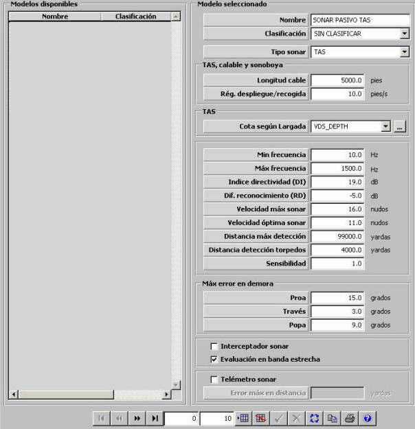

Sonar Pasivo

Descripción de los parámetros:
Tipo de Sonar: Puede tomar los siguientes valores:
Este parámetro determina si el sonar pasivo puede ser desplegado (TAS y Calable) o si puede estar montado en sonoboyas.
Longitud del cable: Este parámetro determina la máxima longitud del cable del sonar pasivo tipo TAS, Calable o de sonoboya y por tanto condiciona la máxima profundidad a la que puede ser desplegado. Este parámetro sólo puede ser introducido si se ha seleccionado tipo de sonar TAS, Calable o de sonoboya.
Unidades: pies
Rango: 0 – 9999
Régimen despliegue/recogida: Este parámetro determina la velocidad con el que el cable del sonar pasivo tipo TAS, Calable o de sonoboya es desplegado o recogido. Este parámetro sólo puede ser introducido si se ha seleccionado tipo de sonar TAS, Calable o de sonoboya.
Unidades: pies / segundo
Rango: 0 – 100
Cota según largada: Esta tabla modela la cota a la que se sumerge el sonar pasivo tipo TAS cuando se encuentra desplegado, según la longitud de cable desplegado (largada) y velocidad respecto al fondo de la unidad propia. Ver apartado Cota según Largada. Este parámetro sólo puede ser introducido si se ha seleccionado tipo de sonar TAS.
Mínima Frecuencia y Máxima Frecuencia: Determinan el margen de frecuencias en el que opera el sonar pasivo. El modelo de sonar pasivo comprueba si alguno de los picos de frecuencia en banda estrecha del contacto (ver Firmas Acústicas) está dentro de este margen de frecuencias para calcular el exceso de señal en banda estrecha que recibe el sonar de este contacto. En banda ancha, el modelo de sonar evaluará la frecuencia media de este rango. El valor de exceso de señal en banda ancha o en banda estrecha si se ha calculado, junto con el factor batítérmico determinarán la probabilidad de obtener detección sonar del contacto.
Unidades: Hz
Rango: 0 – 99999
Diferencial de Reconocimiento (RD): Este parámetro modela el umbral de detección del sonar pasivo. Es tenido en cuenta en el cálculo del exceso de señal que recibe el sonar de un posible contacto.
Unidades: dB
Rango: -999 – 999
Distancia Máxima de Detección: Este parámetro determina un límite máximo para la distancia de detección, de forma que el sonar pasivo sólo puede obtener detecciones a distancias menores o iguales que ésta.
Unidades: yardas
Rango: 0 – 99999
Índice de Directividad (DI): Este parámetro modela la directividad del sonar pasivo. Es tenido en cuenta en el cálculo del exceso de señal que recibe el sonar de un posible contacto.
Unidades: dB
Rango: 0 – 999
Velocidad Máxima del Sonar: Este parámetro determina la velocidad máxima de la plataforma para la cual el sonar pasivo puede obtener detecciones. Se considera que cuando la plataforma tiene una velocidad superior a ésta, el nivel de ruido propio recibido por el sonar pasivo impide que obtenga detecciones. Si el sonar pasivo es tipo sonoboya, no se podrá introducir este parámetro.
Unidades: nudos
Rango: 0 – 100
Velocidad Óptima del Sonar: Este parámetro representa la velocidad de la plataforma a la cual el sonar pasivo recibe el menor nivel de ruido propio posible. Es tenido en cuenta en el cálculo del ruido propio en banda ancha y estrecha recibido por el sonar pasivo en función de la velocidad sobre le agua de la plataforma. Si el sonar pasivo es tipo sonoboya, no se podrá introducir este parámetro.
Unidades: nudos
Rango: 0 – 100
Distancia de Detección de Torpedos: Este parámetro determina un límite máximo para la distancia de detección de torpedos, de forma que el sonar pasivo sólo puede detectar torpedos en el agua a distancias menores o iguales que ésta.
Unidades: yardas
Rango: 0 – 99999
Sensibilidad: Este parámetro es tenido en cuenta por el modelo de Sonar Pasivo para calcular el número de falsos ecos aleatorios que se producen. Cuanto mayor es la sensibilidad del equipo, mayor es el número de falsos ecos que se producen.
Unidades: ---
Rango: 0 – 1
Máximo Error en Demora: Estos parámetros modelan el error con el que el modelo de Sonar Pasivo obtiene la demora de las detecciones, dependiendo de si el contacto se encuentra por proa, por la eslora (través) o por popa. Dicho error se calcula para cada detección como un valor aleatorio entre –error y error, siendo “error” el valor asignado al parámetro correspondiente a su demora.
Proa: Error con el que el modelo de Sonar Pasivo obtiene la demora de las detecciones cuando la marcación del contacto se encuentra entre 315º y 45º.
Unidades: grados
Rango: 0 – 99,99
Través: Error con el que el modelo de Sonar Pasivo obtiene la demora de las detecciones cuando la marcación del contacto se encuentra entre 45º y135º o entre 225º y 315º.
Unidades: grados
Rango: 0 – 99,99
Popa: Error con el que el modelo de Sonar Pasivo obtiene la demora de las detecciones cuando la marcación del contacto se encuentra entre 135º y 225º.
Unidades: grados
Rango: 0 – 99,99
Interceptador Sonar: Este parámetro determina si el sonar pasivo tiene capacidad de interceptador. Cuando un sonar pasivo tiene esta capacidad, podrá detectar tanto unidades como a otros sonares activos que se encuentren encendidos y transmitiendo.
Evaluación en banda estrecha: Este parámetro determina si el sonar pasivo tiene capacidad de evaluar en banda estrecha.
Telémetro sonar: Este parámetro determina si el sonar pasivo tiene capacidad de calcular la distancia de las detecciones obtenidas en menor tiempo y normalmente con menor error (según el siguiente parámetro).
Error máximo en distancia: Este parámetro modela el error con el que el modelo de Sonar Pasivo obtiene la distancia de las detecciones cuando tiene la capacidad de telémetro. Dicho error se calcula para cada detección como un valor aleatorio entre –error y error, siendo “error” el valor asignado a este parámetro. Este parámetro sólo puede ser introducido si se ha seleccionado Telémetro sonar.
Unidades: yardas
Rango: 0 – 9999